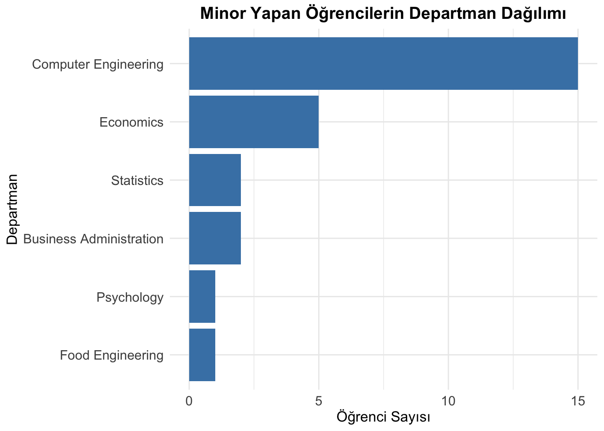
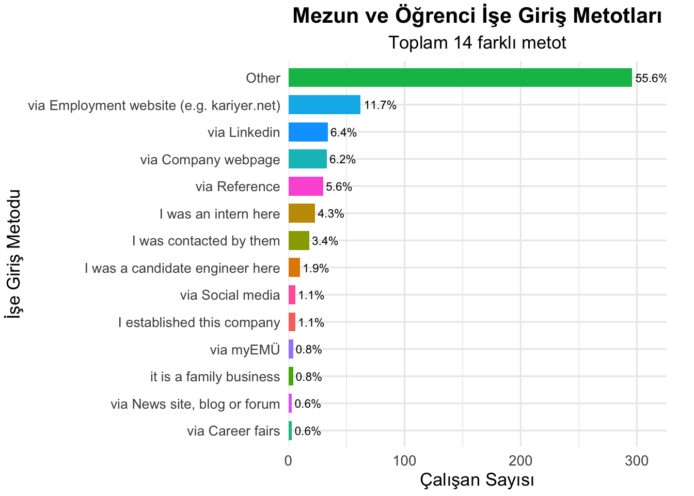
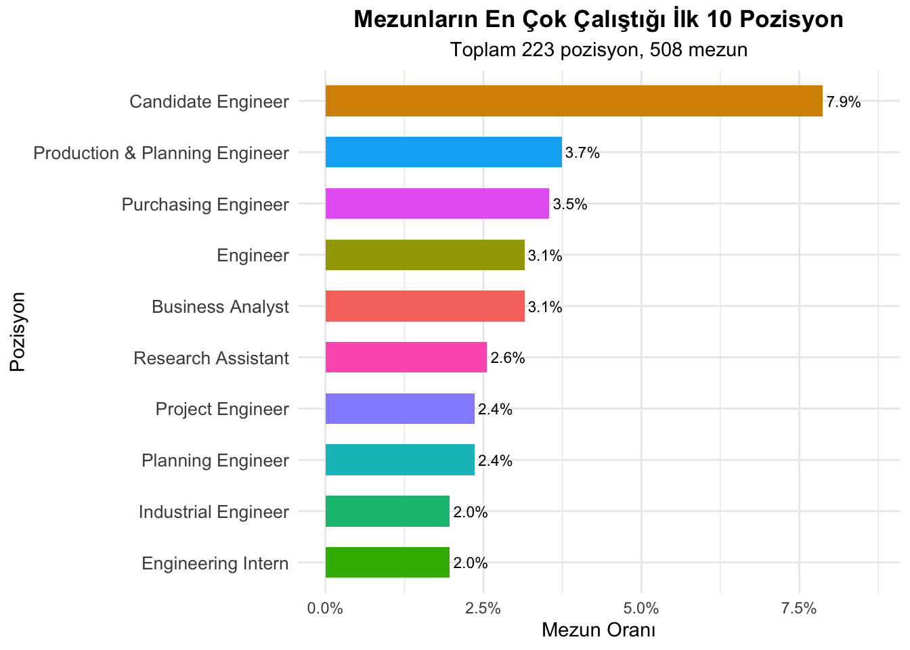

library(dplyr)
Attaching package: 'dplyr'The following objects are masked from 'package:stats':
filter, lagThe following objects are masked from 'package:base':
intersect, setdiff, setequal, unionlibrary(ggplot2)Welcome to my/our project page.
Keep an eye on this space to stay updated with my project activities.
(The titles below are provided as examples; please feel free to adjust them as necessary.)
Bu projede, Hacettepe Üniversitesi Endüstri Mühendisliği bölümü mezun lisans öğrencilerinin kariyer bilgileri incelenerek, mezunların işe başlama süreçleri ve kariyer tercihleri hakkında analizler gerçekleştirilmiştir. Mezunların istihdam edildiği şirketler, bu şirketlerde görev aldıkları pozisyonları, not oratalamaları dağılımları, Erasmus tercihleri ve işe başlama süreleri gibi bilgiler detaylı şekilde analiz edilerek, bu analizler tekrar edilebilir Quarto raporları olarak gösterge paneli oluşturulmasında kullanılmştır.
Veri seti, üniversitenin mezun bilgi sisteminden anonim olarak temin edilmiştir.
Veri kümesi, Hacettepe Üniversitesi Endüstri Mühendisliği bölümünden mezun yaklaşık 800 lisans öğrencisine ait şu bilgileri içermektedir:
▪ GPA (Sayısal): Mezuniyet not ortalaması
▪ Mezun olunan lise türü (Kategorik): Fen, Anadolu, özel lise vs.
▪ Erasmus+ katılım durumu (Kategorik): Evet/Hayır
▪ İşe başlama süresi (Sayısal): Mezuniyetten sonraki süre (ay olarak)
▪ Çalışılan şirket (Kategorik)
▪ İş pozisyonu (Kategorik)
▪ Cinsiyet (Kategorik)
Bu proje, mezunların iş hayatına giriş süreçlerini anlamak, iş bulma süreleri ve tercih ettikleri kariyer yollarını değerlendirmek için seçilmiştir. Hacettepe Üniversitesi Endüstri Mühendisliği bölümü özelindeki mezun profilini anlamak, bölümü tercih edecek adaylara öngörüler sunmak ve gelecekteki mezunlara kariyer danışmanlığı sağlamak projenin temel amacıdır.
Bu aşamada veri analizi öncesi gerçekleştirilen ön işleme adımları açıklanmıştır.
library(dplyr)
Attaching package: 'dplyr'The following objects are masked from 'package:stats':
filter, lagThe following objects are masked from 'package:base':
intersect, setdiff, setequal, unionlibrary(ggplot2)anonim_temiz_veri_listesi <- readRDS("/Users/cagridurmaz/Documents/GitHub/emu660-spring2025-cagridurmaz/islenmis_veri/anonim_temiz_veri_listesi.rds")# --- Settings ---
# Common student ID column name
id_sutun_adi <- "fake_student_id"
# Data frame names
affiliations_df_adi <- "affiliations"
users_df_adi <- "users"
# Filter criteria for affiliations
target_type <- 2 # Change to "2" if type is a string
# Gender column in users
gender_sutun_adi <- "gender"
# --- Validation ---
# Check if the main list exists and is a list
if (!exists("anonim_temiz_veri_listesi") || !is.list(anonim_temiz_veri_listesi)) {
stop("HATA: 'anonim_temiz_veri_listesi' objesi bulunamadı veya liste değil.")
}
# Check if required data frames exist
required_dfs <- c(affiliations_df_adi, users_df_adi)
missing_dfs <- setdiff(required_dfs, names(anonim_temiz_veri_listesi))
if (length(missing_dfs) > 0) {
stop("HATA: Şu DataFrame'ler listede bulunamadı: ", paste(missing_dfs, collapse=", "))
}
affiliations_df <- anonim_temiz_veri_listesi[[affiliations_df_adi]]
users_df <- anonim_temiz_veri_listesi[[users_df_adi]]
# Check if required columns exist
if (!all(c(id_sutun_adi, "type") %in% names(affiliations_df))) {
stop("HATA: '", affiliations_df_adi, "' içinde '", id_sutun_adi, "' veya 'type' sütunları eksik.")
}
if (!all(c(id_sutun_adi, gender_sutun_adi) %in% names(users_df))) {
stop("HATA: '", users_df_adi, "' içinde '", id_sutun_adi, "' veya '", gender_sutun_adi, "' sütunları eksik.")
}
# Filter affiliations and get unique student IDs
filtrelenmis_idler_df <- affiliations_df %>%
filter(type == target_type) %>%
select(all_of(id_sutun_adi)) %>%
distinct()
filtrelenmis_ogrenci_idler <- filtrelenmis_idler_df[[id_sutun_adi]]
cat(" >", length(filtrelenmis_ogrenci_idler), "adet mezun öğrenci bulundu.\n") > 743 adet mezun öğrenci bulundu.# Stop if no students are found
if (length(filtrelenmis_ogrenci_idler) == 0) {
stop("HATA: 'type' = 2 koşuluna uyan öğrenci bulunamadı.")
}
# Filter users to get gender for matching student IDs
gender_df <- users_df %>%
filter(.data[[id_sutun_adi]] %in% filtrelenmis_ogrenci_idler) %>%
select(all_of(id_sutun_adi), all_of(gender_sutun_adi))
# Check if any gender data was found
if (nrow(gender_df) == 0) {
stop("HATA: Filtrelenmiş öğrenci ID'leri için cinsiyet verisi bulunamadı.")
}
# Summarize gender counts and proportions
gender_summary <- gender_df %>%
count(.data[[gender_sutun_adi]]) %>%
mutate(
oran = n / sum(n),
yuzde = oran * 100,
etiket = sprintf("%.1f%%", yuzde)
)
# Rename gender column for clarity
colnames(gender_summary)[1] <- "Cinsiyet"
# Map gender values to Turkish (adjust if gender values differ)
gender_summary <- gender_summary %>%
mutate(Cinsiyet = case_when(
Cinsiyet == "female" ~ "Kadın",
Cinsiyet == "male" ~ "Erkek",
TRUE ~ as.character(Cinsiyet) # Keep other values as is
))
# Create bar plot
p <- ggplot(gender_summary, aes(x = Cinsiyet, y = oran, fill = Cinsiyet)) +
geom_bar(stat = "identity") +
geom_text(aes(label = etiket), vjust = -0.5, size = 4) +
scale_y_continuous(labels = scales::percent, limits = c(0, 1)) +
labs(
title = "Mezunların Cinsiyet Dağılımı",
x = "Cinsiyet",
y = "Oran"
) +
theme_minimal() +
theme(
plot.title = element_text(hjust = 0.5, size = 14, face = "bold"),
axis.text = element_text(size = 12),
axis.title = element_text(size = 12),
legend.position = "none" # Remove legend since x-axis labels are clear
)
# Display the plot (optional, depending on environment)
print(p)
Mezun ve öğrencilerin şehir dağılımı :
library(dplyr)
library(ggplot2)
# 1) type = 2 veya 3 olan öğrencilerin ID'leri
aff_ids <- anonim_temiz_veri_listesi[["affiliations"]] %>%
filter(type %in% c(2, 3)) %>%
pull(fake_student_id)
# 2) users tablosundan o ID'lerle highschool ID'si al
usr_hs <- anonim_temiz_veri_listesi[["users"]] %>%
filter(fake_student_id %in% aff_ids) %>%
select(fake_student_id, highschool)
# 3) highschool ID -> il eşlemesi
hs_prov <- usr_hs %>%
inner_join(
anonim_temiz_veri_listesi[["highschools"]] %>%
select(id, city), # kendi sütun adınızla değiştirin
by = c("highschool" = "id")
) %>%
rename(il = city)
# 4) İllere göre say, oran ve etiket üret
prov_dist <- hs_prov %>%
filter(!is.na(il) & il != "") %>%
count(il) %>%
arrange(desc(n)) %>%
mutate(
pct = n / sum(n),
label = sprintf("%.1f%%", pct * 100)
)
# 5) **Sadece ilk 10 il**i seç
top10_prov <- prov_dist %>%
slice_max(order_by = n, n = 10)
ggplot(top10_prov, aes(
x = reorder(il, -n), # <- -n ile büyükten küçüğe doğru
y = n,
fill = il
)) +
geom_col(width = 0.7) +
geom_text(aes(label = label), vjust = -0.5, size = 3) +
labs(
title = "En Çok Öğrenci/Mezun Gelen İlk 10 İl",
x = "İl",
y = "Kişi Sayısı"
) +
theme_minimal() +
theme(
legend.position = "none",
axis.text.x = element_text(angle = 45, hjust = 1),
plot.title = element_text(hjust = 0.5, face = "bold")
)
library(dplyr)
library(ggplot2)
# 1) Ham verileri al
minor_departments <- anonim_temiz_veri_listesi[["minor_departments"]]
minor_students <- anonim_temiz_veri_listesi[["minor_students"]]
# Debug: Veri yapısını kontrol et
cat("Rows in minor_departments:", nrow(minor_departments), "\n")Rows in minor_departments: 7 cat("Columns in minor_departments:", names(minor_departments), "\n")Columns in minor_departments: id department cat("Rows in minor_students:", nrow(minor_students), "\n")Rows in minor_students: 26 cat("Columns in minor_students:", names(minor_students), "\n")Columns in minor_students: minorid graduatedate fake_student_id # 2) Minor öğrencileri ve departmanları birleştir
minor_data <- minor_students %>%
select(fake_student_id, minorid) %>%
distinct(fake_student_id, minorid, .keep_all = TRUE) %>% # Tekil öğrenci-minorid çiftlerini al
left_join(minor_departments %>% select(id, department),
by = c("minorid" = "id"))
cat("Rows in minor_data after join:", nrow(minor_data), "\n")Rows in minor_data after join: 26 # Debug: Eşleşmeyen minorid'leri kontrol et
if (nrow(minor_data) == 0 || sum(is.na(minor_data$department)) == nrow(minor_data)) {
cat("No matching minorid found in minor_departments. Check minorid and id values:\n")
cat("Unique minorid in minor_students:", unique(minor_students$minorid), "\n")
cat("Unique id in minor_departments:", unique(minor_departments$id), "\n")
}
# 3) Departman kırılımı (her öğrenci bir kez sayılsın)
minor_summary <- minor_data %>%
filter(!is.na(department)) %>% # NA departmanları çıkar
group_by(department) %>%
summarise(Count = n_distinct(fake_student_id), .groups = "drop") %>% # Tekil öğrenci say
arrange(desc(Count))
cat("Rows in minor_summary:", nrow(minor_summary), "\n")Rows in minor_summary: 6 print(minor_summary)# A tibble: 6 × 2
department Count
<chr> <int>
1 Computer Engineering 15
2 Economics 5
3 Business Administration 2
4 Statistics 2
5 Food Engineering 1
6 Psychology 1# 4) Grafik (eğer veri varsa)
if (nrow(minor_summary) > 0 && !all(is.na(minor_summary$department))) {
ggplot(minor_summary, aes(x = reorder(department, Count), y = Count)) +
geom_col(fill = "steelblue") +
coord_flip() +
labs(
title = "Minor Yapan Öğrencilerin Departman Dağılımı",
x = "Departman",
y = "Öğrenci Sayısı"
) +
theme_minimal() +
theme(
plot.title = element_text(hjust = 0.5, face = "bold", size = 14),
axis.text = element_text(size = 11),
axis.title = element_text(size = 12)
)
} else {
cat("No data available to plot. Check join and data content.\n")
}
library(dplyr)
library(ggplot2)
library(forcats)
# --- Settings ---
id_sutun_adi <- "fake_student_id"
works_df_adi <- "works"
country_sutun_adi <- "country"
# --- DataFrames ---
works_df <- anonim_temiz_veri_listesi[[works_df_adi]]
companies_df <- anonim_temiz_veri_listesi[["companies"]]
industries_df <- anonim_temiz_veri_listesi[["industries"]]
# --- 1) Ülke sayısı ---
country_df <- works_df %>%
select(all_of(id_sutun_adi), all_of(country_sutun_adi)) %>%
distinct() %>%
filter(!is.na(.data[[country_sutun_adi]]) & .data[[country_sutun_adi]] != "")
unique_countries <- n_distinct(country_df[[country_sutun_adi]])
# --- 2) Endüstri sayısı ---
industry_df <- works_df %>%
select(all_of(id_sutun_adi), companyid) %>%
distinct() %>%
filter(!is.na(companyid) & companyid != "") %>%
left_join(
companies_df %>% select(id, industry),
by = c("companyid" = "id")
) %>%
filter(!is.na(industry) & industry != "") %>%
left_join(
industries_df %>% select(id, industrytr),
by = c("industry" = "id")
)
unique_industries <- n_distinct(industry_df$industry)
# --- 3) Pozisyon sayısı ---
position_df <- works_df %>%
select(all_of(id_sutun_adi), positionid) %>%
distinct() %>%
filter(!is.na(positionid) & positionid != "")
unique_positions <- n_distinct(position_df$positionid)
# --- 4) İşveren (company) sayısı ---
employer_df <- works_df %>%
select(companyid) %>%
distinct() %>%
filter(!is.na(companyid) & companyid != "")
unique_employers <- n_distinct(employer_df$companyid)
# --- 5) Özet cümlesi ---
cat(sprintf(
"Öğrencilerimiz ve mezunlarımız %d ülke, %d endüstri, %d iş pozisyonu ve %d işverende çalışmış veya halen çalışmaktadır.\n",
unique_countries,
unique_industries,
unique_positions,
unique_employers
))Öğrencilerimiz ve mezunlarımız 28 ülke, 89 endüstri, 540 iş pozisyonu ve 755 işverende çalışmış veya halen çalışmaktadır.Erasmus Programı Katılımları :
library(dplyr)
library(ggplot2)
library(scales)
# ---- 1) Data hazırlığı ----
affiliations <- anonim_temiz_veri_listesi[["affiliations"]]
erasmus <- anonim_temiz_veri_listesi[["erasmus"]]
universities <- anonim_temiz_veri_listesi[["universities"]]
# ---- 2) Affiliations türü 2 veya 3 olan öğrencilerin ID’leri ----
valid_ids <- affiliations %>%
filter(type %in% c(2, 3)) %>%
pull(fake_student_id) %>%
unique()
# ---- 3) Bu öğrenciler arasından Erasmus’a gitmiş olanları seç ----
eras_valid <- erasmus %>%
filter(fake_student_id %in% valid_ids)
# ---- 4) Her kaydı üniversite tablosuyla birleştirip ülke bilgisini al ----
eras_country <- eras_valid %>%
inner_join(
universities %>% select(id, country),
by = c("universityid" = "id")
) %>%
# eksik veya boş ülke adlarını at
filter(!is.na(country) & country != "") %>%
# aynı öğrenci birden fazla kez sayılmasın
distinct(fake_student_id, country)
# ---- 5) Ülke bazında öğrenci sayısını, sıralı hale getir ----
country_counts <- eras_country %>%
count(country, name = "n") %>%
arrange(desc(n))
total_countries <- n_distinct(country_counts$country)
total_students <- n_distinct(eras_country$fake_student_id)
# ---- 7) Yatay bar chart ile görselleştirme ----
ggplot(country_counts, aes(
x = n,
y = reorder(country, n),
fill = country
)) +
geom_col(show.legend = FALSE, width = 0.7) +
geom_text(aes(label = n), hjust = -0.1, size = 3) +
scale_x_continuous(
expand = expansion(mult = c(0, .1)),
labels = comma
) +
labs(
title = "Erasmus’a Gidilen Ülkelere Göre Öğrenci Sayısı",
subtitle = sprintf("Toplam %d ülke, %d öğrenci", total_countries, total_students),
x = "Öğrenci Sayısı",
y = "Ülke"
) +
theme_minimal(base_size = 14) +
theme(
axis.text.y = element_text(size = 10),
plot.title = element_text(hjust = 0.5, face = "bold"),
plot.subtitle = element_text(hjust = 0.5),
plot.margin = margin(5, 20, 5, 5)
)
Erasmus Programı’na Göre Not Dağılımı
library(dplyr)
library(ggplot2)
# 1) affiliations içindeki cgpa’yı numeric'e çevir
affiliations <- anonim_temiz_veri_listesi[["affiliations"]] %>%
mutate(
cgpa = as.numeric(gsub(",", ".", cgpa))
)Warning: There was 1 warning in `mutate()`.
ℹ In argument: `cgpa = as.numeric(gsub(",", ".", cgpa))`.
Caused by warning:
! NAs introduced by coercion# 2) Erasmus’a giden mezunların ID’leri
grad_erasmus_ids <- affiliations %>%
filter(type == 2) %>%
pull(fake_student_id) %>%
intersect(
anonim_temiz_veri_listesi[["erasmus"]] %>% pull(fake_student_id)
)
# 3) Sadece mezun + geçerli cgpa, birden fazla kayıt varsa tekilleştir
gpa_df <- affiliations %>%
filter(type == 2, !is.na(cgpa)) %>%
distinct(fake_student_id, cgpa) %>%
mutate(
Grup = if_else(
fake_student_id %in% grad_erasmus_ids,
"Erasmus",
"Non-Erasmus"
)
)
# 4) Medyan değerleri hazırla
median_df <- gpa_df %>%
group_by(Grup) %>%
summarize(medyan = median(cgpa, na.rm = TRUE)) %>%
ungroup() %>%
mutate(label = sprintf("%.2f", medyan))
# 5) Boxplot + jitter + medyan etiketleri
ggplot(gpa_df, aes(x = Grup, y = cgpa, fill = Grup)) +
geom_boxplot(outlier.shape = NA, alpha = 0.6) +
geom_jitter(width = 0.15, size = 1, alpha = 0.3, na.rm = TRUE) +
# Medyan etiketlerini beyaz zeminde, kutunun üstüne taşıyoruz
geom_label(
data = median_df,
aes(x = Grup, y = medyan, label = label),
nudge_y = 0.1, # kutunun biraz üstüne
fill = "white", # okunurluk için
fontface = "bold",
size = 4
) +
coord_cartesian(
ylim = c(
min(gpa_df$cgpa, na.rm = TRUE),
max(gpa_df$cgpa, na.rm = TRUE) * 1.05
)
) +
labs(
title = "Mezunların CGPA Dağılımı",
x = NULL,
y = "CGPA"
) +
theme_minimal(base_size = 14) +
theme(
legend.position = "none",
plot.title = element_text(hjust = 0.5, face = "bold")
)
Staj Bilgileri :
library(dplyr)
library(ggplot2)
# 1) Ham verileri al
internships <- anonim_temiz_veri_listesi[["internships"]]
companies <- anonim_temiz_veri_listesi[["companies"]]
# Debug: Veri yapısını kontrol et
cat("Rows in internships:", nrow(internships), "\n")Rows in internships: 1612 cat("Columns in internships:", names(internships), "\n")Columns in internships: id companyid positionid startdate enddate city country description employmentmethod companydepartment irecommend iamhappy ibenefits irelationships ienvironment icareer icareerfuture ieducation ioverall erasmus fake_student_id cat("Rows in companies:", nrow(companies), "\n")Rows in companies: 1405 cat("Columns in companies:", names(companies), "\n")Columns in companies: id name industry # 2) Staj ve şirket verilerini birleştir
internship_data <- internships %>%
select(fake_student_id, companyid) %>%
distinct(fake_student_id, companyid, .keep_all = TRUE) %>% # Tekil öğrenci-şirket çiftlerini al
left_join(companies %>% select(id, name),
by = c("companyid" = "id"))
cat("Rows in internship_data after join:", nrow(internship_data), "\n")Rows in internship_data after join: 1573 # Debug: Eşleşmeyen companyid'leri kontrol et
if (nrow(internship_data) == 0 || sum(is.na(internship_data$name)) == nrow(internship_data)) {
cat("No matching companyid found in companies. Check companyid and id values:\n")
cat("Unique companyid in internships:", unique(internships$companyid), "\n")
cat("Unique id in companies:", unique(companies$id), "\n")
}
# 3) Şirket kırılımı (her öğrenci-şirket çifti bir kez sayılsın)
company_summary <- internship_data %>%
filter(!is.na(name)) %>% # NA şirket adlarını çıkar
group_by(name) %>%
summarise(Count = n_distinct(fake_student_id), .groups = "drop") %>% # Tekil öğrenci say
arrange(desc(Count)) %>%
slice_head(n = 10) # En çok staj yapılan ilk 10 şirket
cat("Rows in company_summary:", nrow(company_summary), "\n")Rows in company_summary: 10 print(company_summary)# A tibble: 10 × 2
name Count
<chr> <int>
1 TAI - TUSAŞ 97
2 ASELSAN 86
3 Türk Traktör 49
4 Arçelik 22
5 HAVELSAN 22
6 TUSAŞ 22
7 Mercedes Benz Türk 21
8 ROKETSAN 19
9 FNSS Savunma Sistemleri 14
10 MAN Türkiye 14# 4) Grafik (eğer veri varsa)
if (nrow(company_summary) > 0 && !all(is.na(company_summary$name))) {
ggplot(company_summary, aes(x = reorder(name, Count), y = Count)) +
geom_col(fill = "steelblue") +
coord_flip() +
labs(
title = "En Çok Staj Yapılan Şirketlerin Dağılımı",
x = "Şirket",
y = "Stajyer Sayısı"
) +
theme_minimal() +
theme(
plot.title = element_text(hjust = 0.5, face = "bold", size = 14),
axis.text = element_text(size = 11),
axis.title = element_text(size = 12)
)
} else {
cat("No data available to plot. Check join and data content.\n")
}
Mezunların çalıştığı sektörler :
# Load required packages
library(dplyr)
library(ggplot2)
library(forcats) # For reordering factors
# --- Settings ---
id_sutun_adi <- "fake_student_id"
works_df_adi <- "works"
companies_df_adi <- "companies"
industries_df_adi <- "industries"
companyid_sutun_adi <- "companyid"
company_id_sutun_adi<- "id"
max_industries <- 10 # Kaç endüstri göstereceğiz
# --- Validation ---
if (!exists("anonim_temiz_veri_listesi") || !is.list(anonim_temiz_veri_listesi)) {
stop("HATA: 'anonim_temiz_veri_listesi' objesi bulunamadı veya liste değil.")
}
required_dfs <- c(works_df_adi, companies_df_adi, industries_df_adi)
missing_dfs <- setdiff(required_dfs, names(anonim_temiz_veri_listesi))
if (length(missing_dfs) > 0) {
stop("HATA: Şu DataFrame'ler listede bulunamadı: ", paste(missing_dfs, collapse = ", "))
}
works_df <- anonim_temiz_veri_listesi[[works_df_adi]]
companies_df <- anonim_temiz_veri_listesi[[companies_df_adi]]
industries_df <- anonim_temiz_veri_listesi[[industries_df_adi]]
# industries_df içinde 'industrytr' sütunu olmalı
if (!all(c("id","industrytr") %in% names(industries_df))) {
stop("HATA: '", industries_df_adi, "' içinde 'id' veya 'industrytr' sütunu bulunamadı.")
}
# --- Build industry data frame ---
industry_df <- works_df %>%
select(all_of(id_sutun_adi), all_of(companyid_sutun_adi)) %>%
distinct() %>%
filter(!is.na(.data[[companyid_sutun_adi]]) & .data[[companyid_sutun_adi]] != "") %>%
# önce companyid ile şirket tablosuna, oradan industry id'ye ulaş
left_join(
companies_df %>% select(all_of(company_id_sutun_adi), industry),
by = setNames(company_id_sutun_adi, companyid_sutun_adi)
) %>%
# sonra industry id ile industries_df'e kat, industrytr al
left_join(
industries_df %>% select(id, industrytr),
by = c("industry" = "id")
) %>%
rename(industry_name = industrytr)
# Uyarı: eşleşmeyen kayıtlar
unmatched <- industry_df %>% filter(is.na(industry_name))
if (nrow(unmatched) > 0) {
cat("UYARI:", nrow(unmatched),
"kayıt endüstri ile eşleşmedi. Örnek companyid değerleri:\n")
print(head(unmatched[[companyid_sutun_adi]], 5))
}UYARI: 16 kayıt endüstri ile eşleşmedi. Örnek companyid değerleri:
[1] "1554" "1574" "1580" "1666" "1668"# Geçerli endüstri kayıtlarını filtrele
industry_df <- industry_df %>%
filter(!is.na(industry_name) & industry_name != "")
if (nrow(industry_df) == 0) {
stop("HATA: Geçerli endüstri verisi bulunamadı.")
}
# --- Özet ve Grafik için Sayma ---
unique_industries <- n_distinct(industry_df$industry_name)
industry_summary <- industry_df %>%
count(industry_name) %>%
arrange(desc(n)) %>%
mutate(
oran = n / sum(n),
yuzde = oran * 100,
etiket = sprintf("%.1f%%", yuzde),
industry_name = fct_reorder(industry_name, n)
)
plot_data <- industry_summary %>%
slice_head(n = max_industries)
# --- Plot ---
p <- ggplot(plot_data, aes(y = industry_name, x = yuzde, fill = industry_name)) +
geom_col(show.legend = FALSE) +
geom_text(aes(label = etiket), hjust = 0, size = 3) +
scale_x_continuous(labels = scales::percent_format(scale = 1)) +
labs(
title = "Mezunların Çalıştığı Endüstriler",
subtitle = sprintf("Toplam %d farklı endüstri (İlk %d)", unique_industries, nrow(plot_data)),
x = "Çalışan Yüzdesi (%)",
y = "Endüstri"
) +
theme_minimal() +
theme(
plot.title = element_text(hjust = 0.5, face = "bold"),
plot.subtitle = element_text(hjust = 0.5)
)
print(p)
Mezunların çalıştığı şirketler :
# Load required packages
library(dplyr)
library(ggplot2)
library(forcats) # For reordering factors
# --- Settings ---
# Common student ID column name
id_sutun_adi <- "fake_student_id"
# Data frame names
works_df_adi <- "works"
companies_df_adi <- "companies"
# Column names
companyid_sutun_adi <- "companyid"
company_id_sutun_adi <- "id"
name_sutun_adi <- "name"
# Number of companies to display in the plot (to avoid clutter)
max_companies <- 10
# --- Validation ---
# Check if the main list exists and is a list
if (!exists("anonim_temiz_veri_listesi") || !is.list(anonim_temiz_veri_listesi)) {
stop("HATA: 'anonim_temiz_veri_listesi' objesi bulunamadı veya liste değil.")
}
# Check if required data frames exist
required_dfs <- c(works_df_adi, companies_df_adi)
missing_dfs <- setdiff(required_dfs, names(anonim_temiz_veri_listesi))
if (length(missing_dfs) > 0) {
stop("HATA: Şu DataFrame'ler listede bulunamadı: ", paste(missing_dfs, collapse=", "))
}
works_df <- anonim_temiz_veri_listesi[[works_df_adi]]
companies_df <- anonim_temiz_veri_listesi[[companies_df_adi]]
# Check if required columns exist
required_columns_works <- c(id_sutun_adi, companyid_sutun_adi)
if (!all(required_columns_works %in% names(works_df))) {
missing_cols <- setdiff(required_columns_works, names(works_df))
stop("HATA: '", works_df_adi, "' içinde şu sütunlar eksik: ", paste(missing_cols, collapse=", "))
}
required_columns_companies <- c(company_id_sutun_adi, name_sutun_adi)
if (!all(required_columns_companies %in% names(companies_df))) {
missing_cols <- setdiff(required_columns_companies, names(companies_df))
stop("HATA: '", companies_df_adi, "' içinde şu sütunlar eksik: ", paste(missing_cols, collapse=", "))
}
# Deduplicate by fake_student_id and companyid
company_df <- works_df %>%
select(all_of(id_sutun_adi), all_of(companyid_sutun_adi)) %>%
distinct() %>%
filter(!is.na(.data[[companyid_sutun_adi]]) & .data[[companyid_sutun_adi]] != "") # Remove NA or empty companyid
# Join with companies to get name
company_df <- company_df %>%
left_join(
companies_df %>% select(all_of(company_id_sutun_adi), all_of(name_sutun_adi)),
by = setNames(company_id_sutun_adi, companyid_sutun_adi)
)
# Check for unmatched companyid values
unmatched <- company_df %>% filter(is.na(.data[[name_sutun_adi]]))
if (nrow(unmatched) > 0) {
cat(" UYARI: ", nrow(unmatched), " kayıt şirket ismi ile eşleşmedi. Örnek companyid değerleri:\n")
print(head(unmatched[[companyid_sutun_adi]], 5))
}
# Filter out NA or empty company names
company_df <- company_df %>%
filter(!is.na(.data[[name_sutun_adi]]) & .data[[name_sutun_adi]] != "")
# Stop if no valid company data
if (nrow(company_df) == 0) {
cat("HATA: Geçerli şirket verisi bulunamadı.\n")
cat(" - Eşleşen kayıt sayısı: ", nrow(company_df) + nrow(unmatched), "\n")
cat(" - NA veya boş şirket ismi sayısı: ", nrow(unmatched), "\n")
cat(" - Örnek works$companyid değerleri:\n")
print(head(works_df[[companyid_sutun_adi]], 5))
cat(" - Örnek companies$id değerleri:\n")
print(head(companies_df[[company_id_sutun_adi]], 5))
stop("HATA: Analiz için yeterli veri yok.")
}
# Count unique companies
unique_companies <- n_distinct(company_df[[name_sutun_adi]])
# Stop if no valid company data
if (unique_companies == 0) {
stop("HATA: Geçerli şirket verisi bulunamadı.")
}
# Count employees per company
company_summary <- company_df %>%
count(.data[[name_sutun_adi]]) %>%
arrange(desc(n)) %>%
mutate(
oran = n / sum(n),
yuzde = oran * 100,
etiket = sprintf("%.1f%%", yuzde),
# Reorder company names for plotting (based on n for consistency)
!!name_sutun_adi := fct_reorder(.data[[name_sutun_adi]], n)
)
# Limit to top N companies for plotting
plot_data <- company_summary %>%
slice_head(n = max_companies)
# Create horizontal bar plot with percentages on x-axis
p <- ggplot(plot_data, aes(y = .data[[name_sutun_adi]], x = yuzde, fill = .data[[name_sutun_adi]])) +
geom_bar(stat = "identity") +
geom_text(aes(label = etiket), hjust = 0, size = 3.0, angle = 0) + # Rotate percentage labels
scale_x_continuous(labels = scales::percent_format(scale = 1)) + # Format x-axis as percentages
labs(
title = "Mezunların Çalıştığı Şirketler",
subtitle = sprintf("Toplam %d Farklı şirket (İlk %d şirket)", unique_companies, nrow(plot_data)),
x = "Çalışan Yüzdesi (%)",
y = "Şirket"
) +
theme_minimal() +
theme(
plot.title = element_text(hjust = 0.5, size = 14, face = "bold"),
plot.subtitle = element_text(hjust = 0.5, size = 12),
axis.text.x = element_text(size = 10),
axis.text.y = element_text(size = 10),
axis.title = element_text(size = 12),
legend.position = "none" # Remove legend since y-axis labels are clear
)
# Display the plot (optional, depending on environment)
print(p)
Öğrencilerin İşe Giriş Metotları
library(dplyr)
library(ggplot2)
library(scales)
# 1) Gerekli veri setlerini al
works <- anonim_temiz_veri_listesi[["works"]]
employment_methods <- anonim_temiz_veri_listesi[["employmentmethod"]]
affiliations <- anonim_temiz_veri_listesi[["affiliations"]]
# 2) Sadece type = 2 veya 3 (mezun + öğrenci) olan ID’ler
valid_ids <- affiliations %>%
filter(type %in% c(2, 3)) %>%
pull(fake_student_id) %>%
unique()
# 3) Bu ID’lerle works’u filtrele ve her kişinin sadece ilk employmentmethod kaydını tut
method_dist <- works %>%
filter(fake_student_id %in% valid_ids,
!is.na(employmentmethod) & employmentmethod != "") %>%
distinct(fake_student_id, .keep_all = TRUE) %>%
select(fake_student_id, employmentmethod)
# 4) employmentmethod ID → name eşlemesi
method_dist <- method_dist %>%
inner_join(
employment_methods %>% select(id, name),
by = c("employmentmethod" = "id")
)
# 5) Metot başına çalışan sayısı ve oranı hesapla
method_summary <- method_dist %>%
count(name, name = "n") %>%
arrange(desc(n)) %>%
mutate(
pct = n / sum(n),
label = percent(pct, accuracy = 0.1)
)
# 6) Grafik — en çoktan daha aza yatay bar
ggplot(method_summary, aes(
x = n,
y = reorder(name, n),
fill = name
)) +
geom_col(show.legend = FALSE, width = 0.7) +
geom_text(aes(label = label), hjust = -0.1, size = 3) +
scale_x_continuous(
expand = expansion(mult = c(0, .1)),
labels = comma
) +
labs(
title = "Mezun ve Öğrenci İşe Giriş Metotları",
subtitle = sprintf("Toplam %d farklı metot", n_distinct(method_summary$name)),
x = "Çalışan Sayısı",
y = "İşe Giriş Metodu"
) +
theme_minimal(base_size = 13) +
theme(
axis.text.y = element_text(size = 10),
plot.title = element_text(hjust = 0.5, face = "bold"),
plot.subtitle = element_text(hjust = 0.5),
plot.margin = margin(5, 20, 5, 5)
)
Mezunların Çalıştığı Pozisyonlar :
library(dplyr)
library(ggplot2)
library(scales)
# 1) Veri setlerini al
users <- anonim_temiz_veri_listesi[["users"]]
affiliations <- anonim_temiz_veri_listesi[["affiliations"]]
works <- anonim_temiz_veri_listesi[["works"]]
positions <- anonim_temiz_veri_listesi[["positions"]]
# 2) Sadece mezunların ID'lerini (type == 2) al
grad_ids <- affiliations %>%
filter(type == 2) %>%
pull(fake_student_id)
# 3) works'u mezunlarla sınırlayıp, her mezunun ilk kaydını tut
works_grad <- works %>%
filter(fake_student_id %in% grad_ids,
!is.na(positionid) & positionid != "") %>%
distinct(fake_student_id, .keep_all = TRUE)
# 4) Pozisyon adlarını ekle
pos_dist <- works_grad %>%
inner_join(
positions %>% select(id, position),
by = c("positionid" = "id")
)
# 5) Toplam pozisyon ve mezun sayısı
total_positions <- n_distinct(pos_dist$position)
total_people <- n_distinct(pos_dist$fake_student_id)
message(sprintf("Mezunlarımız %d farklı pozisyonda, toplam %d kişi çalışmaktadır.",
total_positions, total_people))Mezunlarımız 223 farklı pozisyonda, toplam 508 kişi çalışmaktadır.# 6) Pozisyon başına mezun sayısını ve oranını hesapla
pos_summary <- pos_dist %>%
count(position, name = "n") %>%
arrange(desc(n)) %>%
mutate(
pct = n / sum(n),
label = percent(pct, accuracy = 0.1)
)
# 7) İlk 10 pozisyonu seç
top10_pos <- pos_summary %>% slice_max(order_by = n, n = 10)
# 8) Yatay bar chart (en çoktan en aza)
ggplot(top10_pos, aes(
x = pct,
y = reorder(position, pct),
fill = position
)) +
geom_col(width = 0.6) +
geom_text(aes(label = label),
hjust = -0.1, size = 3) +
scale_x_continuous(
labels = percent_format(),
limits = c(0, max(top10_pos$pct) * 1.1)
) +
labs(
title = "Mezunların En Çok Çalıştığı İlk 10 Pozisyon",
subtitle = sprintf("Toplam %d pozisyon, %d mezun", total_positions, total_people),
x = "Mezun Oranı",
y = "Pozisyon"
) +
theme_minimal() +
theme(
legend.position = "none",
axis.text.y = element_text(size = 10),
plot.title = element_text(hjust = 0.5, face = "bold"),
plot.subtitle = element_text(hjust = 0.5)
)
Bu çalışma kapsamında oluşturulan gösterge paneli, bölüm mezunlarının kariyer dinamiklerine ilişkin bütüncül bir bakış sunmuştur.
Demografik Dağılım: Mezunlar arasında cinsiyet dengesi korunan bir profil oluşmaktadır.
İstihdam Çeşitliliği: Mezunlar çeşitli sektörlerde, farklı pozisyonlarda ve çok sayıda şirket bünyesinde çalışmakta; bu durum bölümün çok yönlü yetkinlikler kazandırdığını göstermektedir.
İşe Giriş Yöntemleri: Doğrudan başvuru, stajdan geçiş ve kariyer etkinlikleri gibi yollar yaygın olarak kullanılmakta; bölümün kariyer destek süreçlerinin etkinliğine dair ipuçları sunmaktadır.
Erasmus Deneyimi Etkisi: Uluslararası değişim programına katılan mezunlar ile katılmayanlar arasında akademik ve kariyer süreçlerinde olumlu farklılıklar gözlenmiş; bu da uluslararası deneyimin değerini vurgulamaktadır.
Gösterge Paneli Katkısı: Etkileşimli Quarto raporları, bölüm yöneticileri, kariyer danışmanları ve aday öğrencilere güncel, anlaşılır ve veri odaklı karar desteği imkânı sağlamaktadır
R Shiny Web Uygulaması: Mevcut Quarto raporları temel alınarak, interaktif bir R Shiny dashboard’u geliştirilmesi planlanabilir. Bu uygulama ile paydaşlar gerçek zamanlı filtreleme, arama ve derinlemesine inceleme imkânına sahip olacak; mobil uyumluluk ve kullanıcı yönetimi gibi ek özellikler entegre edilebilir.
Gelişmiş İstatistiksel Yöntem İncelemeleri: Tanımlayıcı analizlerin ötesinde, regresyon modelleri (örneğin işe başlama süresi üzerine etkileyen faktörlerin belirlenmesi), sınıflandırma algoritmaları (mezunların sektör tercihlerinin öngörülmesi), zaman serisi analizleri (yıllık mezun atanma trendlerinin izlenmesi) ve kümeleme yöntemleri (benzer kariyer profillerinin segmentasyonu) gibi istatistiksel tekniklerin uygulanması hedeflenebilir.
Uzun Dönem Takip ve Karşılaştırmalı Çalışmalar: Mezunlardan belirli aralıklarla anket verisi toplanarak panelde zaman içinde değişimlerin izlenmesi; farklı fakülteler veya uluslararası üniversite örnekleriyle karşılaştırmalı analizler yapılması da planlanabilir.